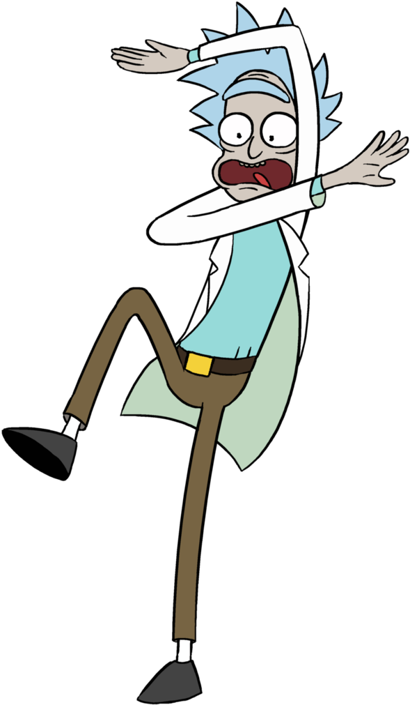
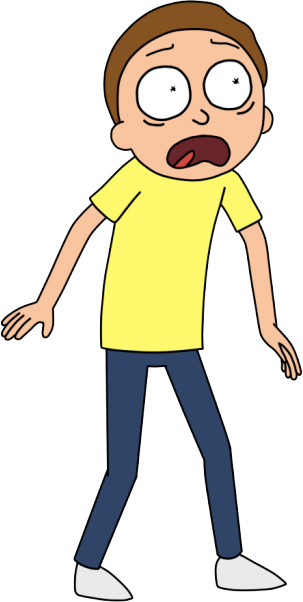

Esta é uma página de Tributo a animação Rick and Morty
Rick and Morty
Série/animação, Personagens, TOP



Rick and Morty (em português Rick e Morty) é uma série de animação adulta norte-americana de comédia e ficção científica criada por Justin Roiland e Dan Harmon para o bloco de programação noturno Adult Swim, exibido no canal Cartoon Network.
Para mais detalhes acesse a página no Wikipédia